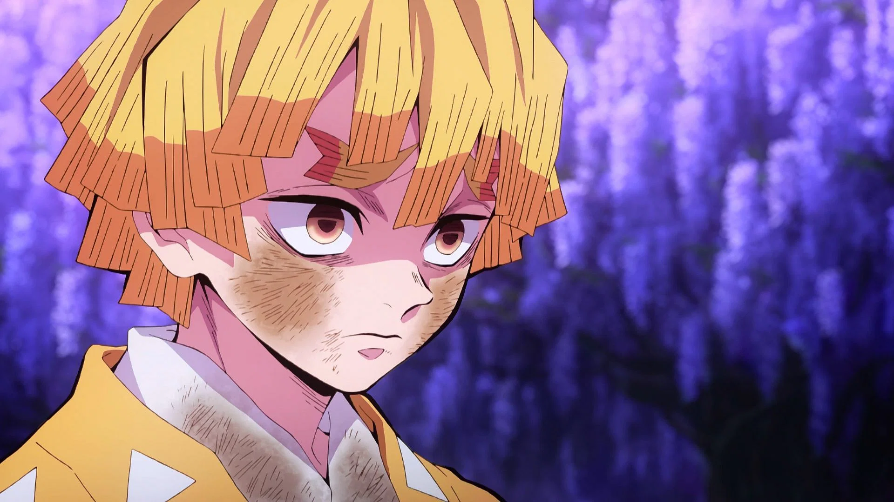
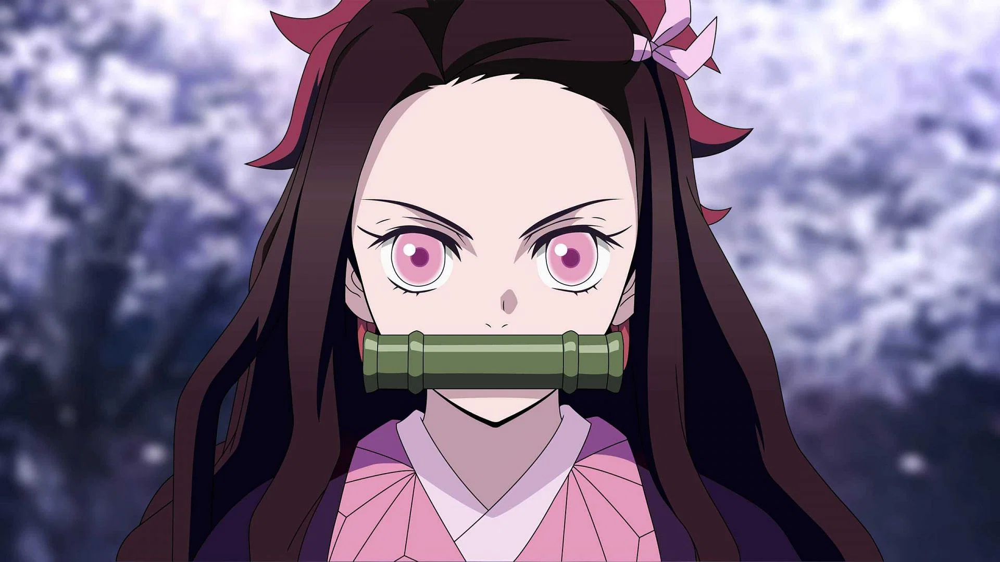
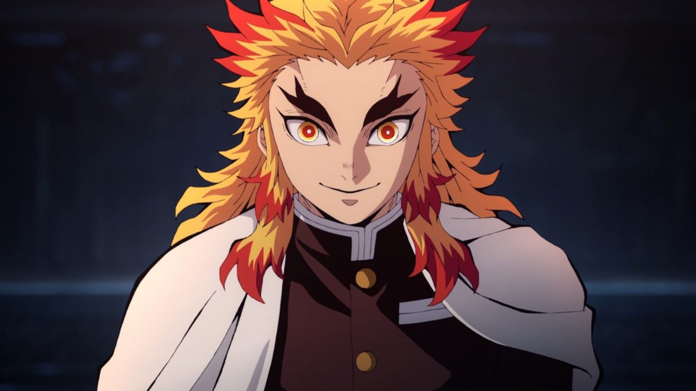
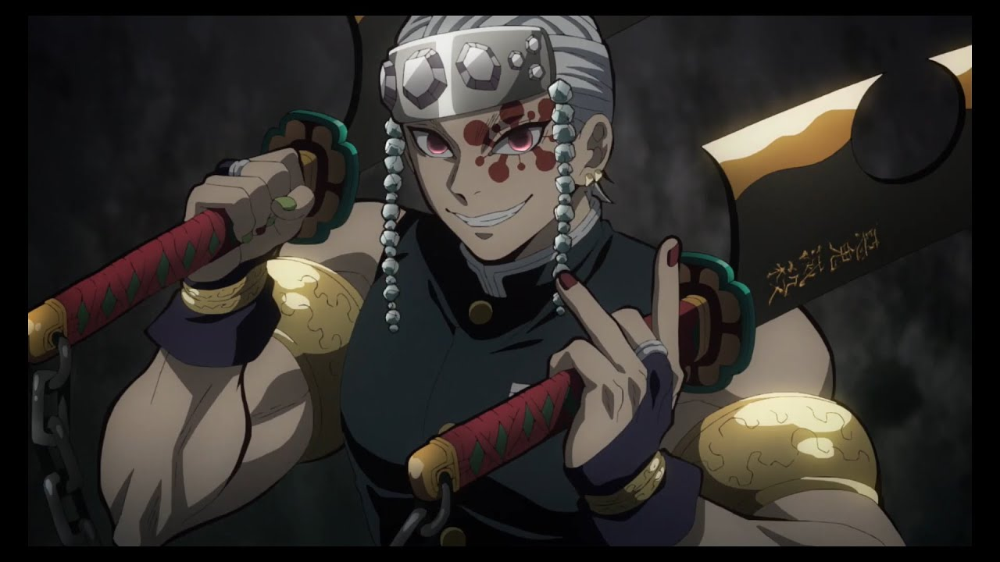
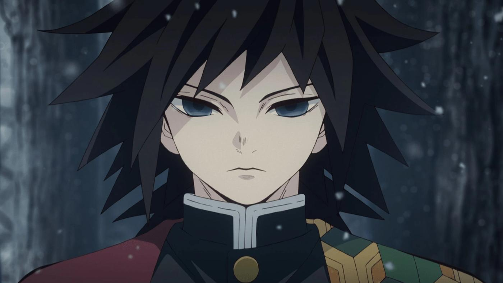

Tanjiro Kamado
Tanjiro is a teenager who goes on a quest to restore the humanity of his sister, Nezuko, who was turned into a demon after his family was killed by Muzan Kibutsuji following an attack that resulted in the death of his other relatives. After an encounter with Giyu Tomioka, a demon slayer, Tanjiro is recruited by Giyu to also become a demon slayer to help his sister turn human again and avenge his family.

Zenitsu Agatsuma
Zenitsu is a powerful Demon Slayer and a member of the Demon Slayer Corps. He accompanies Tanjiro on his quest and is later joined by Inosuke and travels with them. He comes off as a coward, always claiming he doesn't have long to live due to the dangerous job of being a Demon Slayer. He also has rather low self-esteem despite his strength, to the point that he thinks he's actually useless
Inosuke Hashibira
Inosuke is an extremely short-tempered and proud young man who always likes to think he is the strongest fighter in a situation, constantly challenging most people he comes across and wanting others to respect and praise him for his skill. This often leads him into unnecessary danger, since he tends to overestimate his abilities in comparison to who he's fighting and refuses to accept when he's been defeated

Nezuko Kamado
Nezuko and her older brother Tanjiro Kamado are the sole survivors of an incident where they lost their entire family to demons, with Nezuko being transformed into a demon, but still surprisingly showing signs of human emotion and thought. When Tanjiro learns there is a way to cure her, he begins his quest to rescue her. Nezuko believed that all humans are her allies and fights alongside them to kill demons.

Kyojuro Rengoku
Kyojuro was greatly enthusiastic in regard to his duties as a Hashira, which is the top-tier of the demon slayer corps, and often came across as cheerfully eccentric. He was amiable, pure of heart, and boasted extraordinary technique and swordsmanship stemming from strict practice and discipline. He was an honorable warrior who adhered to his code of morals and principles that was instilled into him by his mother at a young age—the most significant being his belief that those who were born strong have a duty to protect the weak.

Tengen Uzui
Tengen, one of the Hashira of the Demon Slayer Corps is an eccentric and flashy individual, always wanting to be "flamboyant", possessing a need for everything to be flashy and outstanding, even proclaiming that he is the god of flashiness and festivals. However, Tengen also has a caring side that is masked under his flamboyant façade, one he only shows to those that are extremely close to him, most notably his three wives, Makio, Suma, and Hinatsuru.
